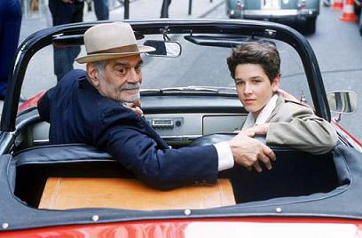

Monsieur Ibrahim und die Blumen des Koran
Originaltitel
Genre
Land & Jahr
Kinostart
FSK & Länge
Regie
Darsteller
weitere Links
Monsieur Ibrahim et les fleurs du Coran
Drama
Frankreich 2003
25.03.2004 (Falcom Media Group)
ab 6 Jahren 94 min.
Francois Dupeyron
Isabelle Adjani, Pierre Boulanger, Gilbert Melki, Omar Sharif
Bildergalerie Kontakte
Inhalt
Im Paris der 60er Jahre lebt der jüdische Junge Moses (Pierre Boulanger) mit seinem Vater, der vernachlässigt seinen Filius aber weitgehend. Von der Wohnung hat der Heranwachsende den besten Blick auf die Prostituierten, die auf der Stra�e mit dem bezeichnenden Namen Rue de Paradis ihrem Tagesgeschäft nachgehen. Der dreizehnjährige Moses schlachtet entschlossen sein Sparschwein und gibt sich zum ersten Mal der käuflichen Liebe hin. Dieses Erlebnis bleibt aber auch das Einzige Glücksgefühl für den verlassenen Jungen. Das ändert sich erst als er sich mit Ibrahim (Omar Sharif) anfreundet, der die grundlegenden Fragen des Lebens mit Hilfe seines Korans beantwortet. Der alte Mann kennt das Geheimnis des Lächelns, das nicht nur auf dem Gesicht von Momo erstrahlt, sondern auch die Gesichtszüge des Kinopublikums erreicht. Kleine Gesten wie ein Schulterzucken oder eine Handbewegung ersetzen lange Dialoge und verhindern, dass die tiefschürfenden Lehren des muslimischen Krämers zu abgehoben wirken.
Zum Film
Der interreligiöse Dialog spielt in dem Drama eine gro�e Rolle. Moses ist jüdischer Abstammung. Für ihn bedeutet der Glaube aber nur "schlechte Erinnerungen", denn für sein Vater besteht die jüdische Identität nur aus der Erinnerung an den Holocaust. Für Monsieur Ibrahim ist der Koran die fest Grundlage seines Lebens. Es ist ein Buch der Lebensweisheiten, in dem der strenggläubige Muslim sogar Blumen presst. Nicht nur dem Islam bietet der warmherzig inszenierte Film ein Podium. Auf einer Reise von Paris in die Türkei wird der Zuschauer wie Momo von Monsieur Ibrahim in drei abendländischen monotheistischen Weltreligionen eingeführt. Der Besuch einer Kirche, einer Synagoge und einer Moschee wird für den Jungen zu einem leibhaftigen Erlebnis, dem sich auch das Kinopublikum schwer entziehen kann.
"Monsieur Ibrahim und die Blumen des Koran" stellt die wesentlichen Erfahrungen, die ein Mensch in seinem Leben machen kann, in den Mittelpunkt. Abschied, Trauer, aber auch über Liebe, Freundschaft und Vertrauen. Vor allem aber ist es ein Plädoyer für Toleranz. Omar Sharif, der als Katholik zur Welt gekommen ist und später zum Islam konvertierte, konnte nicht immer auf Toleranz bauen. Als er 1967 mit Barbara Streisand in "Funny Girl" spielte, nannte ihn die arabische Presse einen Verräter, weil er die jüdische Schauspielerin küsste. Monsieur Ibrahim hegt im Film die gleiche Hoffnung, die auch Omar Sharif noch hat. Er hofft auf Frieden im Nahen Osten. Der muslimische Lebensmittelhändler und der jüdische Junge sind beide einsam, zusammen zeigen sie, dass man miteinander leben und auch über Konfessions- oder Rassegrenzen hinweg lieben kann und darf. Diese Botschaft möchte insbesondere der arabischer Schauspieler Omar Sharif vermitteln.